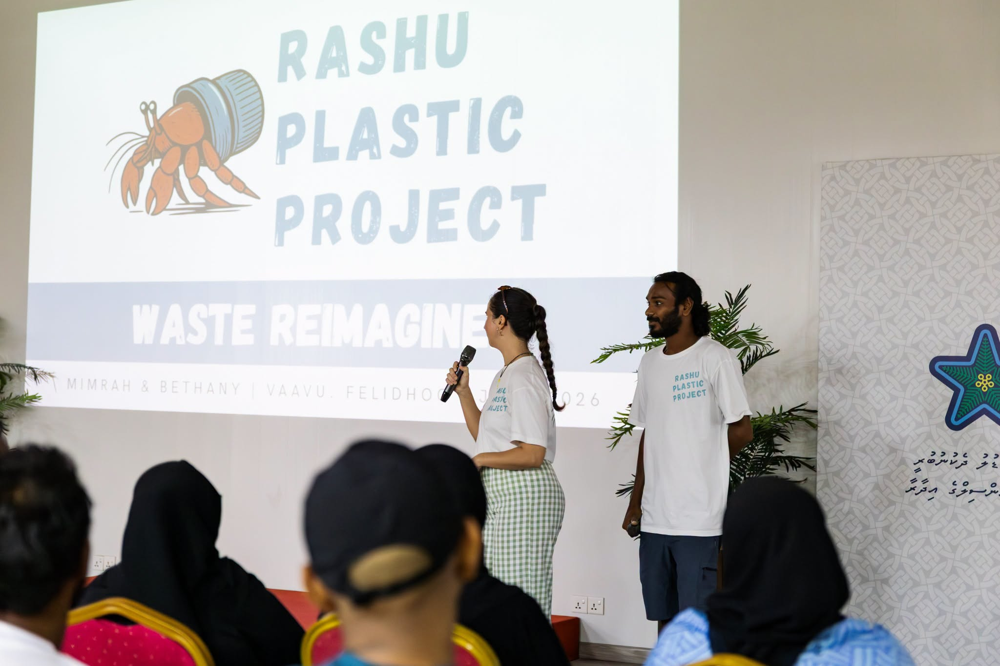

Community
Bringing Sustainability to the Community: Cleanup in Manadhoo
Hosting a community cleanup and educational session on plastic pollution, recycling, and environmental stewardship in Manadhoo.
Read More